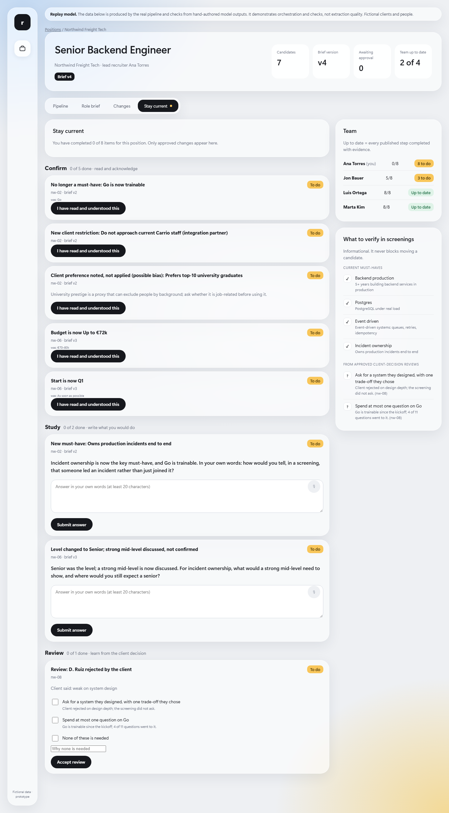
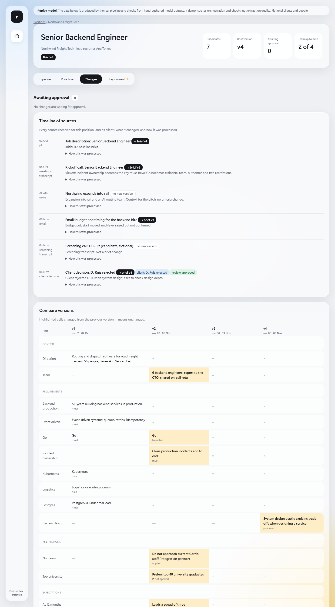

In searches for small companies, the real criteria arrive later: in the kickoff call, the founder's email, the client's rejection. This harness keeps every recruiter on a search current with those changes, and checks that they learned them.
One Next.js service · SQLite · traced AI calls 7 checked stages 185 tests
"Go can be learned on the job. Incident ownership cannot." The must-have flips; the JD still says Go.
Budget cut to €72k, start moved to Q1, mid-level "maybe". Only Ana got the email.
"Weak on system design." Nobody had asked about design in the screening; 4 of 11 questions went to Go.
A stage is complete only when its check passes and the result is stored. Open "How this was processed" on any source to see it. The model proposes; rules and a person decide.


Moving a candidate is never blocked. Checks happen when the role changes, not on every submission. A lead sees "2 of 4 up to date" and knows who to nudge.
I've built retrieval pipelines and app integrations many times. They depend on each agency's tools and are easy to add. They would also hide what matters here: the reasoning from what the client said to what the recruiter knows.
Draft wording of the owner's stated reasoning; the owner confirms or edits it before submission.
| RAG / embeddings | One approved brief plus one new source fits the context window. Retrieval would add a failure mode with no benefit at this scale. |
| Email, Slack, tl;dv, ATS connectors | Simulated as files with metadata. A connector only changes how a file arrives, not what happens next. |
| Candidate scoring | Out of scope by design. The harness reviews the recruiter's screening against the brief, never the candidate. |
| Quizzes with a score | Recruiters explain better than they pick options: free text, with feedback on what a full answer covers. |
Ingest and hashing, seven checked stages, verbatim-quote evidence, approval and audit, bias rules, learning steps by change type, team completion, screening review against the brief at screening time, CLI, web UI, 164 tests.
The model runs on recorded outputs by default, so the demo shows orchestration and checks, not extraction quality. The OpenAI provider is wired and tested; the live run is pending. Study feedback is keyword-based. Candidates are fake.
cd app-next && pnpm install && pnpm harness rebuild && pnpm dev
Details: README · DESIGN.md · plan and reviews in _work/2026-11-08-harness-build/